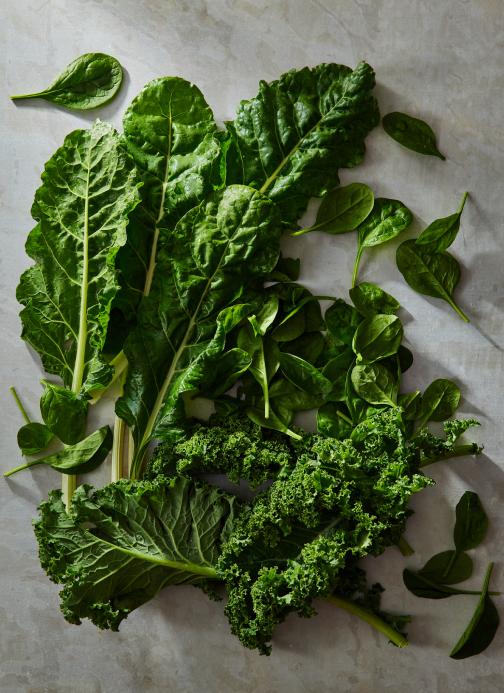

We believe in produce. Tasty produce. Produce like:
Apples. Oranges. Limes. Lemons. Guavas.
Carrots. Cucumbers. Jicamas. Cauliflowers.
Brussels sprouts. Shallots. Japanese eggplants.
Asparagus. Artichokes—Jerusalem
artichokes, too. fasdfasfd asfd fadsf afsdfa
Radishes. Broccoli. Baby broccoli. Broccolini.
Bok choy. Scallions.
Ginger. Cherries. Raspberries. Cilantro. Parsley. Dill.
What are we forgetting?
Oh! Onions. Yams. Avocados. Lettuce.
Arugula (to some, “rocket”). Persian cucumbers,
in addition to aforementioned “normal” cucumbers.
Artichokes. Zucchinis. Pumpkins.
Squash
(what some cultures call pumpkins).
Sweet potatoes and potato-potatoes.
Jackfruit. Monk fruit. Fruit of the
Loom. Fruits of our labor (this website).
Sorrel.
Pineapple. Mango. Gooseberries.
Blackberries. Tomatoes. Heirloom tomatoes.
Beets.
Chives. Corn. Endive. Escarole,
which, we swear, we’re vendors of organic
produce,
but if you asked us to describe what escaroles are...


The person who grew these was located in Central California and, er, hopefully very well-compensated.